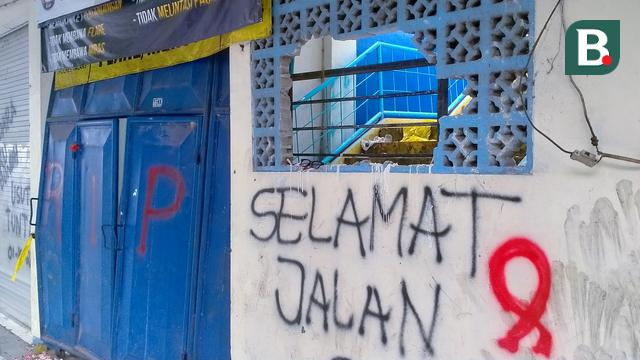
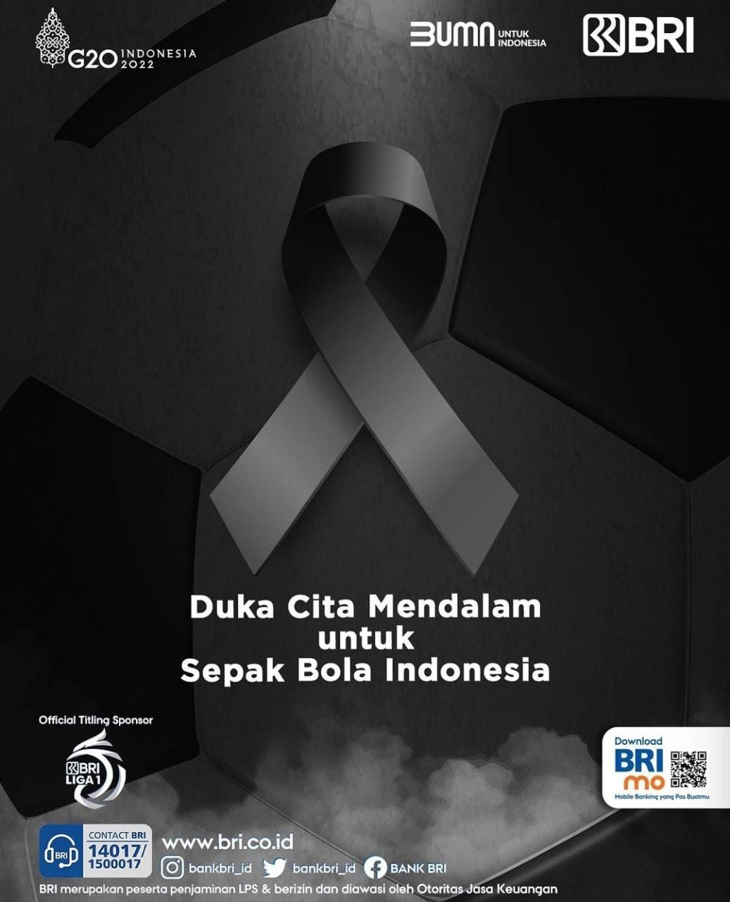

Jangan Saling Menyalahkan
Adik kandung dari Anggota Exco PSSI Pieter Tanuri ini tidak ingin berbagai pihak saling menyalahkan satu sama lain atas tragedi Kanjuruhan.
“Kami berharap pihak-pihak lain jangan sampai saling menyalahkan. Biarkan pihak-pihak yang berwenang untuk melakukan tugasnya dengan maksimal untuk mengungkap tragedi ini. Kami setuju dengan keputusan apapun yang dibuat. Ini semua kan masih ada proses hukumnya,” terang Yabes.
